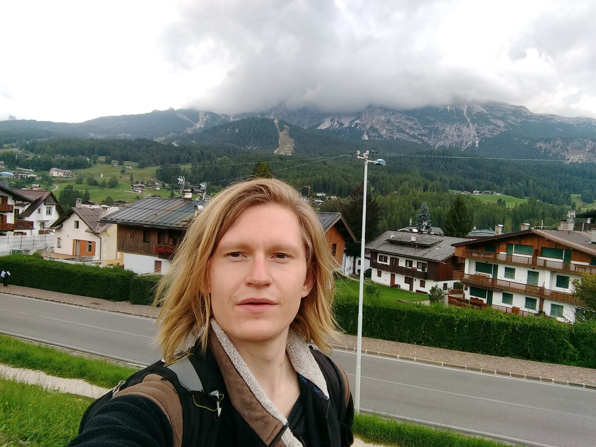

I am a 5th year PhD student studying macroeconomics at UCLA, with a broad research interest in monetary and fiscal policy, labor markets, inequality, and business cycles. My current work primarily revolves around solving heterogeneous agent models of the macroeconomy. Before starting my degree at UCLA, I was a research analyst at the Federal Reserve Bank of New York, where I worked on topics related to empirical trade economics, applied microeconomics, and household finance.
